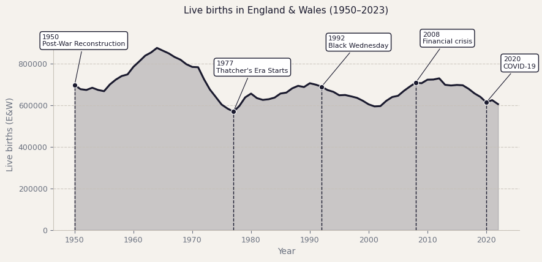
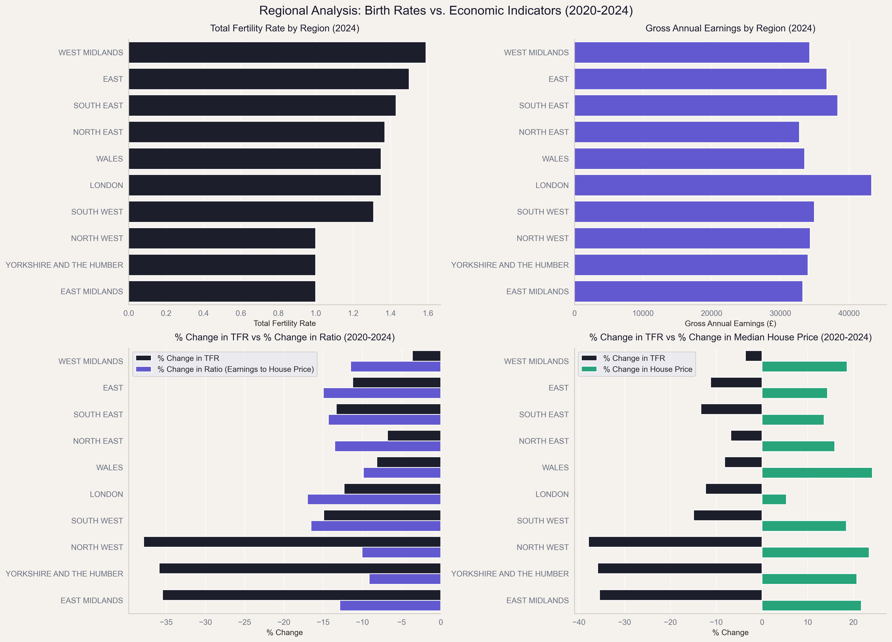

The numbers, first. Births in England and Wales have fallen to their lowest point since the 1970s, which was the era of power cuts, trade union strikes, and a certain iron-willed Prime Minister taking office. The fertility rate, which measures the average number of children born per woman over her lifetime, now stands at a record low of 1.44. All right, we hope that now you see why this is worth investigating.
So here is what we will do. We start with the births themselves. We will see how the population has shifted over seventy years, and where the great economic disruptions of that period left their mark. Then we bring in the harder numbers: wages, prices, housing costs. No spoilers, but the picture that emerges is worth sticking around for.
About the data
This analysis sources data from publicly available UK datasets. Birth records come from the data.gov.uk, covering 1938–2024 of live birth counts in England and Wales. Population estimates come from ons.gov.uk, covering 1838–2022 of male and female population counts in the UK. Note: the population data was fetched from sheet called "Table 7" in the "UK population estimates 1838 to 2022" Excel file. The household disposable income data, consumer price index and house prices are also sourced from ons.gov.uk, spaning the following periods: 1977 to 2024 for the median household disposable income, 1989 to 2025 for the consumer price index and 1968 to 2025 for the average house prices.
As with any administrative dataset, reported birth figures depend on registration completeness and accuracy. Economic series are subject to revision. Treat the correlations shown here as exploratory signals, not causal proof.
Where Did All the Babies Go?
Figure 1 tells a story that raw fertility numbers alone cannot. The baby boom of the 1960s stands out immediately. Births were peaking at nearly 900,000 a year, and the nation was “exhaling” after the war and rebuilding itself in the most literal sense. What follows is a long, uneven decline, annotated with moments our chart marks with dashed lines: Thatcher's arrival, Black Wednesday, the 2008 financial crisis, COVID-19.
"UK Births peaked at nearly 900,000 a year in the 1960s, and have been declining ever since." — from the data
But here is what makes the recent numbers even more astounding. Since 1950, the female population of England and Wales has grown by a third: 33% in total, averaging around 4.3% per decade. In other words, there are more women of childbearing age today than there were in the post-war years. And yet, the births are lower. The pool has grown, but the output has shrunk. But why? That is what we will investigate in the next sections.

Figure 1 — Live births in England & Wales
Annual count of live births (data.gov.uk), shown as an area series from 1950 with vertical markers and labels at selected years: post-war reconstruction, the late-1970s Thatcher's arrival, Black Wednesday (1992), the 2008 financial crisis, and the COVID-19 period.
The Economic Hypothesis
There are many theories about why birth rates have declined, but the one we are going to look at is the economic hypothesis: that the rising cost of living, stagnant wages, and housing affordability crisis have made it financially impossible for many young people to start families. Is it really true that young Britons are facing economic pressures that their parents and grandparents did not? Or is it just a matter of changing social norms, choice of lifestyle and personal preferences?
When we look at the different ways of measuring economic growth and inflations over the last 30 years in the UK, interesting patterns emerge that might give us an idea of why the fertility rates keep declining although there are more women alive in the UK to day than there were during the baby boom years.
Figure 2 — UK Economic Indicators, 1990–2023
Four interacive panels showing GDP per capita (line, blue), Consumer Price Index (line, red), Median Houshold Disposable Income (line, green), and Average House Prices (line, purple).
While the constant and steady growth in GDP per capita and household income suggests rising prosperity, the soaring house prices and inflation paint a more complex picture of economic pressures young people face today. Eventhough the consumer price index (CPI) has had its ups and downs the last 30 years, the recent spike in inflation has been particularly sharp, but this can not directly be used to explain the downward trend in fertility rates.
"While the median household disposable income has steadily risen by 52.53% from 1990 to 2020, the average house price has skyrocketed by 298.18% in the same period..." — from the data
The most interesting trend here to explore is the dramatic increase in house prices, which has outpaced income growth and made homeownership increasingly unattainable for many young adults. While the median household disposable income has steadily risen by 52.53% from 1990 to 2020, the average house price has skyrocketed by 298.18% in the same period, creating a significant affordability gap that might make it financially challenging for young people to settle down and start families. Understandably so, as many might not want to bring a child into a world where they can not afford to provide them with a stable home.
Housing costs and Income over time
Now that we have taken a look at the live births over time and the economic development of life in the UK as a whole. It makes sense to expand to looking at the individual regions of the UK and how housing prices, and gross income factor into this. To see if we can spot any correlation across time between economic and demographic indicators.
To do this we consider the total fertility rate, median housing prices, gross median annual income across the regions of england, including wales. From 2020-2024. This was done to simplify finding and processing the data, that we got from the Office for National Statistics(UK). We do this by by plotting the TFR per region, the Income per Region, as bar plots. Followed by using another barplot to compare the change in the ratio between housing prices and gross income over the 2020-2024 period. And then a barplot showing the percent change in TFR and gross income per region, over the 2020-2024 period.

Figure 3 — Temporal changes in income, housing and TFR across English regions and Wales
Regional and temporal change chart. top left, Total fertility rate by region(2024). top right, gross median annual income by Region(2024). Bottom left, % change in TFR vs % change in Housing/income ratio(2020-2024). bottom right, % change in TFR vs % change in Housing prices(2020-2024) data from (ons.gov.uk)
And while this is enough to get a taste of the dynamics at play. It is also important to stress that the income data is the gross income and not disposable income. That means the cost of living is not factored in, and so any relationship between this and the TFR should be taken with a grain of salt. We see no visible relationship upon visual inspection of the income and tfr per region plots. A negative directional correlation between the change in housing prices and fertility is visible in the bottom right barplot. And while the bottom left bar plot with appear to show a directional correlation of the gross income and the TFR. We must remember that the gross median income is an uncertain datasource for use as the housing vs income ration. Because it doesnt factor in the cost of living and other expenses that might affect peoples decision to have a child. For that reason, in combination with the comparatively short time period of 5 years. It is too short and too uncertain to make any strong statements about correlation between these two. The short time also makes the correlation between housing prices and TFR less robust, as a longer time period might both strength or weaken this relationship.
In conclusion we have explored how TFR varies across regions, and compared its change over time to housing and income changes over time. Where while we see a negative directional correlation is visible between housing, that might survive the scrutiny of a longer timeseries. And a directional correlation of housing prices/gross income ration and tfr, this one because of the gross income data is far too certain to draw any conclusions from.
What the Data Looks Like
Dataset overview
The births dataset (ONS Vital Statistics) covers 1938–2023. We restrict to 1990–2023 for alignment with economic series: 34 rows, 3 variables, 18 KB. Variables: Year, Number of live births, Total Fertility Rate.
The economic datasets cover the same 1990–2023 window at annual frequency. All are publicly available from the ONS Economy collection and the World Bank Open Data portal. Combined, the four economic series add roughly 160 additional data points across 4 variables per year.
The regional datasets cover 8 different tables across a set of ons data sources. That were first manually pruned to simplify final combined dataset creation This result in a final dataset that contains the ONS location code for the area, the region name, the local name, the location type, and then for 2020 to 2024 the TFR, live births, gross annual median income, median housing prices, and finally the ratio of gross annual medium income and median housing prices. This results in a final dataset containing 355 rows and 29 columns.
Key distributional properties
TFR ranges from 1.44 (2023, provisional low) to 1.97 (2008 pre-crisis peak). The distribution is left-skewed — most years cluster in the 1.6–1.9 range, with recent years pulling the tail down. House prices show a pronounced right skew due to the post-2010 acceleration. GDP growth is roughly normal with two clear negative outliers (2009: −4.2%, 2020: −9.8%). CPI inflation is bimodal — low and stable pre-2021, then a sharp spike to 11.1% in 2022.
The data is not geo-referenced at this stage. Future extensions could use regional ONS data to compare fertility and house prices at the local authority level, which would substantially strengthen the causal case.
Can Britain Afford to Have Children?
The data tells a consistent story: every time the economic environment worsened sharply — 2008, 2020, 2022 — fertility followed downward within one to two years. Whether that is a causal relationship or a coincidence of timing, the final project will attempt to answer with more rigorous statistical methods.
The magazine-style format we have chosen lets us layer the argument: first the visual pattern, then the economic context, then the correlation — building towards a conclusion that even a non-specialist reader can follow. We believe this genre is right for the story because fertility rates are not an abstract policy metric. They are about real decisions made by real people — and those people deserve to understand the forces acting on them.